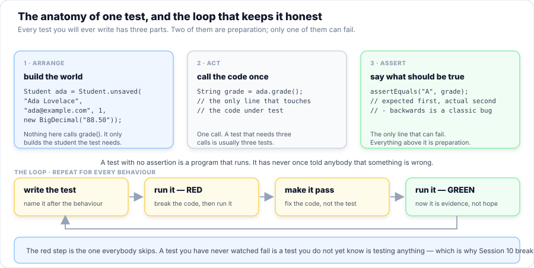
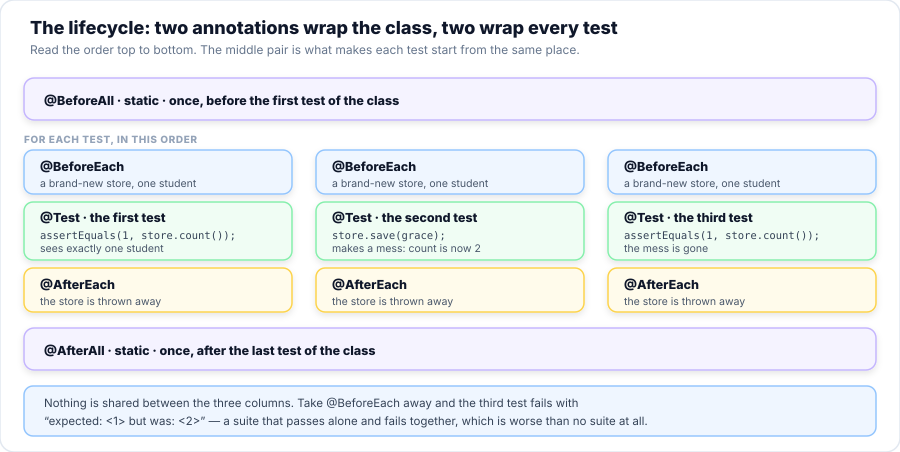
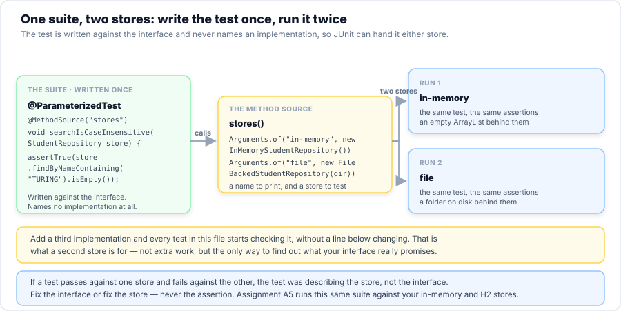
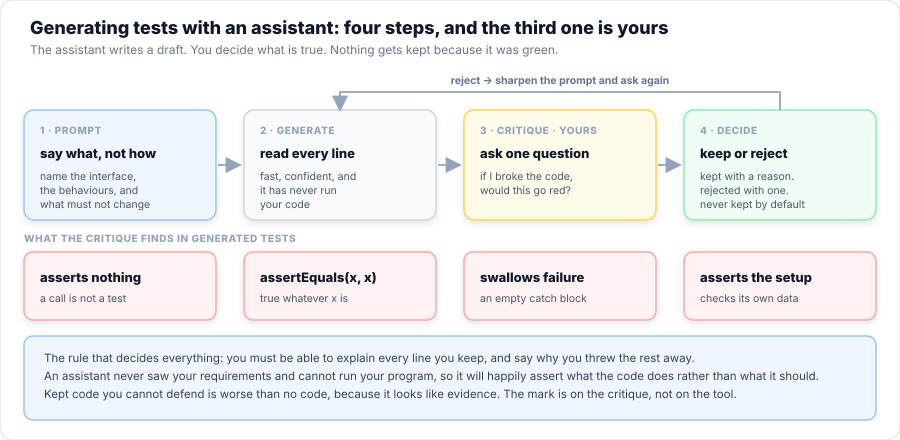

Session 10 — Unit Testing & AI Tools
Your registry works and it is worked on, which is not the same thing. Session 9 put a seam in it. Today you find out whether the seam is real, because the only honest answer to “does this still work?” is a test that would go red if it stopped. You already wrote a test runner by hand — it is sitting in your A5 starter, 402 lines of it — and today you find out what it cannot do and let JUnit 5 do it instead. Then the second half: the AI tools. You will generate tests and documentation with an assistant and then critique what comes back, because a green suite you cannot explain is not evidence.
- Say what a test runner does, having read the one you wrote in Session 9, and name four things it cannot do that JUnit can.
- Write a JUnit 5 test class, run it three ways (IDE, console launcher, Maven), and read a failure message out loud.
- Choose the right assertion for the claim —
assertEquals,assertThrows,assertAll,assertNull,assertInstanceOf— and explain whyexpectedcomes first. - Use
@BeforeEachto give every test its own starting state, and describe the order the four lifecycle annotations run in. - Run one suite against two implementations with
@ParameterizedTestand@MethodSource, and explain what a green run against both actually proves. - Break your own code on purpose and name the test that caught it — and say why a test you have never seen fail is not yet a test.
- Spot the four shapes of a test that cannot fail: no assertion, comparing a value to itself, swallowing the failure, and asserting the setup instead of the code.
- Install and configure a coding assistant, point it at your JDK and your project, and say what leaves the machine when you use it.
- Prompt an assistant for test cases against an interface, then keep or reject each one with a stated reason.
- Run
javadoc, read its warnings, and critique an AI-drafted doc comment against the code it describes. - Decide whether a test is worth keeping, and argue for confidence over a coverage percentage.
Your Roadmap for Today
Why This Matters
Session 9 gave the registry a shape that survives change. But shape is a claim about the future, and claims about the future need evidence. The only evidence that software works is a program that checks it and fails when it stops being true. Everything else — a demo, a screenshot, a colleague saying it looked fine — is a story.
This is not a formality you do at the end. On a real team, the test suite is the specification: it is the only document that is checked, every single build, against the code as it actually is. A comment goes stale silently. A test goes red. That difference is why the registry’s interface from Session 9 is worth so much more now: an interface with a suite behind it is a promise somebody is keeping.
Part 1 of 10 What SelfCheck Cannot Do
Open code/a5-patterned-registry-starter/src/main/java/com/aptech/a5/SelfCheck.java.
It is 402 lines, it is the thing you have been running after every requirement, and it is worth
looking at properly before you replace it — because you wrote a test framework,
and nobody told you that is what you were doing.
public class SelfCheck {
private static int passed = 0;
private static int failed = 0;
private interface Check {
void run() throws Exception;
}
private static final Map<Integer, Course> COURSES = Map.of(
1, Course.of(1, "Java Programming", 12, "450.00"),
2, Course.of(2, "Database Fundamentals", 10, "380.00"),
3, Course.of(3, "Web Development", 8, "320.00"),
4, Course.of(4, "Software Engineering", 14, "520.00"));
public static void main(String[] args) throws Exception {
System.out.println("=== A5 Self-Check ===\n");
// Set BEFORE anything touches AppConfig: the singleton reads the properties once, at the
// moment the class is first used, so a property set later has no effect at all.
System.setProperty("registry.store", "h2");
System.setProperty("registry.locale", "fr");
System.setProperty("registry.exportDir", "selfcheck-tmp/export");
run("R1 the in-memory store answers all six questions", SelfCheck::r1);
run("R2 the database store answers the same six questions", SelfCheck::r2);
run("R2 a null mark comes back null, not 0", SelfCheck::r2NullMark);
run("R2 a search is a value, so an injection returns nothing", SelfCheck::r2Injection);
run("R3 the factory picks the store by name", SelfCheck::r3);
run("R4 the configuration is one instance, read once", SelfCheck::r4);
run("R5 two fee rules, one call site", SelfCheck::r5);
run("R6 the listener records what it was told", SelfCheck::r6);
run("R7 the same messages in two languages", SelfCheck::r7);
run("R8 export and read back is a round trip", SelfCheck::r8RoundTrip);
run("R8 a student with no mark survives the round trip", SelfCheck::r8Nulls);
run("R8 walk, glob and deleteAll", SelfCheck::r8Files);
Files.deleteIfExists(Path.of("selfcheck-tmp", "export"));
Files.deleteIfExists(Path.of("selfcheck-tmp", "roundtrip"));
Files.deleteIfExists(Path.of("selfcheck-tmp"));
System.out.println("\n" + passed + " passed, " + failed + " failed.");
System.out.println(failed == 0
? "The registry is structured. Session 10 is going to be easy."
: "Fix the FAILs above, then run SelfCheck again.");
if (failed > 0) {
System.exit(1);
}
}
Read what is there. A Check interface with one method. A run(name, check)
loop that calls it and catches the failure. A PASS/FAIL line with the
reason. A tally, and System.exit(1) so a script can tell whether it worked. That is
a test runner: it is a small, honest one, and it does exactly what JUnit does at the top level.
Now the interesting question. What can it not do?
| What you want | SelfCheck | JUnit 5 |
|---|---|---|
| Run one test on its own, from the IDE | No. It is one main; you get all of it or none. |
A green arrow in the gutter, per method. |
| Give every test a fresh starting state | No. The store is a local in main, and by requirement R4 they share one. |
@BeforeEach — Part 4. |
| Run the same test against two implementations | Only by writing the block twice, by hand. | @ParameterizedTest — Part 5. |
| See which assertion failed, and both values | Only if you wrote the message yourself, every time. | expected: <A> but was: <B>, printed for you. |
| A machine-readable result for a build server | An exit code, and text. | Exit code, XML report, and every IDE on earth reads it. |
| Keep going after one failure | Depends on the Check you wrote — it is your job to remember. |
The runner's job, not yours. |
None of that is a criticism of what you wrote. It is the point: you now know what a test runner is, because you built one. Nothing in JUnit will feel like magic today, because you have already written the loop, the counter and the exit code yourself. What you have not written is the thousand small decisions around it — how a test is discovered, named, isolated and reported — and those are exactly what a real framework is for.
Student.grade(), or
one method of a store — with everything else real but small. A check is
anything that tells you yes or no: a SelfCheck line, a main that
prints the answer, a look at the output. Both are useful and only one of them is repeatable
by a machine at 3 a.m. Today is about the second kind.
The rest of this session works in code/s10-unit-testing/, a small project that is
only the registry: the Student and Course records, the
StudentRepository interface from Session 9, and two implementations of it. No
database is involved anywhere today — which is not a simplification, it is a
demonstration. Session 9's interface was worth extracting because it makes this
possible.
Part 2 of 10 Your First Test
A test class looks like a normal Java class with two differences: it has no main,
and its methods are annotated. That is the whole of it.
public interface StudentRepository {
/** The student with this id, or an empty Optional. Absence is normal: no null, no throw. */
Optional<Student> findById(int id);
/** Every student, in a stable order, so two runs give the same answer. */
List<Student> findAll();
/** Every student on one course. */
List<Student> findByCourse(int courseId);
/** Every student whose name contains the fragment, case-insensitively. */
List<Student> findByNameContaining(String fragment);
/**
* Inserts when {@code student.id() == 0} and returns the stored student with the id the
* store chose. Updates when the id is already set. The caller never invents an id.
*/
Student save(Student student);
/** True when something was actually removed. */
boolean deleteById(int id);
int count();
/** Which store this is, in words — "in-memory", "file". It ends up in test names. */
String storeName();
}
Eight methods, no java.sql, no checked exception. This is the contract, and a
contract is exactly the kind of thing a test suite is for: it says what every implementation
must do, and it can be checked against any of them.
Example 1 — four tests, four passes

The code below is the whole file. Read the three comments at the top of it first; they are the entire mental model.
class E01_FirstTest {
/** Builds a student with this mark. Every test below reads better because of this one line. */
private static Student withMark(String mark) {
return Student.unsaved("Ada Lovelace", "ada@example.com", 1, new BigDecimal(mark));
}
@Test
@DisplayName("a student who has not been marked has no grade")
void noMarkHasNoGrade() {
Student ada = Student.unsaved("Ada Lovelace", "ada@example.com", 1, null);
// Not "F". Being unmarked is not the same as having failed, and that is a decision the
// code makes on purpose — so it is worth a test that would notice if it changed.
assertEquals("-", ada.grade());
}
@Test
@DisplayName("80 is an A")
void eightyIsAnA() {
assertEquals("A", withMark("80").grade());
}
@Test
@DisplayName("79.99 is a B, not an A")
void justUnderEightyIsAB() {
// The boundary is the interesting value. This test and the one above it are what stop
// ">=" quietly becoming ">".
assertEquals("B", withMark("79.99").grade());
}
@Test
@DisplayName("a mark of 100 is an A and a mark of 0 is an F")
void theEndsOfTheRangeAreBothCovered() {
assertEquals("A", withMark("100").grade());
assertEquals("F", withMark("0").grade());
}
}Run it and you get this, exactly:
Four tests, four passes, and the display names you wrote are what appears. Notice what is
absent: no main, no counter, no if, no exit code. You wrote
“this should be true” four times and the framework did the rest.
The red half of red–green
A suite that passes proves nothing until you have watched it fail. Open
Student.java, find grade(), and change one character:
if (m >= 80) return "A"; // before
if (m > 80) return "A"; // after - one character, one boundaryRun the suite again. eightyIsAnA goes red, and the message is the whole reason a framework beats a hand-rolled loop:
expected: <A> but was: <B>
That is a sentence, not a stack trace. It names the value you said should be there and the value
that actually was. Put the = back, run it again, and it is green — and
now you have a test. A test is not green; a test is something you have watched go red
for the right reason.
Three ways to run the same test class
This matters more than it looks. The console launcher is what this page uses, and it is the one that works with no IDE and no Maven. Learn that one first.
lib/ as a library, then click the green arrow beside the class name. Fastest once it is set up, and it is the only one that gives you a re-run button that re-runs just the test that failed.mvn test, if you have Maven and a network. It fetches JUnit for you and writes an XML report. The pom.xml in the project is already set up; you never need it, and it is good to know it exists.Part 3 of 10 Assertions — the Whole Vocabulary
An assertion is a claim plus the evidence that would disprove it. There are about a dozen in JUnit and you will use six of them for years. Example 2 uses each one on code that really exists, so nothing here is a syntax demonstration.
class E02_Assertions {
private static Student ada() {
return Student.unsaved("Ada Lovelace", "ada@example.com", 1, new BigDecimal("88.50"));
}
@Test
@DisplayName("assertEquals is for values that should be the same")
void assertEqualsIsForValues() {
assertEquals("Ada Lovelace", ada().name());
assertEquals(5, "Hello".length());
}
@Test
@DisplayName("assertNotEquals is for the thing that must have changed")
void assertNotEqualsIsForChange() {
Student before = ada();
Student after = before.withMark(new BigDecimal("95.00"));
// A record's withMark makes a copy, so the original is untouched. That is worth knowing.
assertEquals(new BigDecimal("88.50"), before.mark());
assertNotEquals(before.mark(), after.mark());
}
@Test
@DisplayName("assertTrue and assertFalse are for yes/no questions")
void booleanAssertions() {
StudentRepository store = new InMemoryStudentRepository();
assertTrue(store.findAll().isEmpty(), "a new store should have nothing in it");
assertTrue(store.count() == 0);
Student stored = store.save(ada());
assertFalse(stored.id() == 0, "save() must hand back the id the store chose");
}
@Test
@DisplayName("assertNull and assertNotNull are for absence")
void nullAssertions() {
Student unmarked = Student.unsaved("Nia Okoro", "nia@example.com", null, null);
assertNull(unmarked.mark(), "no mark is null, not zero");
assertNull(unmarked.courseId());
assertNotNull(ada().mark());
}
assertEquals(expected, actual) — expected first. Getting the
two the wrong way round does not break the test. It breaks the message, and the message
is the only thing you have at three in the morning when a build fails on somebody else’s
machine. Read a failure as a sentence: “expected A, but was B” only
makes sense if A is what you asked for.
The two that earn their place
@Test
@DisplayName("assertThrows proves the guard actually guards")
void theValidationRulesAreReal() {
// The compact constructor promises no invalid Student can exist. Three ways to try.
IllegalArgumentException noName = assertThrows(IllegalArgumentException.class,
() -> Student.unsaved(" ", "ada@example.com", 1, null));
assertTrue(noName.getMessage().contains("name"), "the message should say what was wrong: " + noName.getMessage());
assertThrows(IllegalArgumentException.class,
() -> Student.unsaved("Ada Lovelace", "not-an-email", 1, null));
assertThrows(IllegalArgumentException.class,
() -> Student.unsaved("Ada Lovelace", "ada@example.com", 1, new BigDecimal("101")));
}
@Test
@DisplayName("saving an id that nobody has is refused, not quietly inserted")
void anIdNobodyHasIsRefused() {
// This one exists to be contrasted with BrokenRepository in Example 5, which inserts
// instead of refusing — and so turns one mistake into two students.
StudentRepository store = new InMemoryStudentRepository();
// id 0 means "insert me", so this one is fine and does not throw.
assertDoesNotThrow(() -> store.save(ada()));
// A non-zero id that is not in the store is a mistake, and the store says which one.
IllegalArgumentException refused = assertThrows(IllegalArgumentException.class,
() -> store.save(new Student(9999, "Ghost", "ghost@example.com", 1, null, true)));
assertTrue(refused.getMessage().contains("9999"),
"the message should name the bad id, got: " + refused.getMessage());
assertEquals(1, store.count(), "the refused save must not have added anybody");
}
@Test
@DisplayName("assertDoesNotThrow is for the happy path you want to keep")
void assertDoesNotThrowIsForTheHappyPath() {
assertDoesNotThrow(() -> Student.unsaved("Ada Lovelace", "ada@example.com", 1, null));
}
@Test
@DisplayName("assertAll reports every failure, not just the first")
void assertAllChecksEverything() {
Student ada = ada();
// Without assertAll this test stops at the first mismatch. With it, you get all four
// answers in one run — which is the difference between one fix and four round trips.
assertAll("Ada's fields",
() -> assertEquals("Ada Lovelace", ada.name()),
() -> assertEquals("ada@example.com", ada.email()),
() -> assertEquals(1, ada.courseId()),
() -> assertTrue(ada.active()),
() -> assertEquals("A", ada.grade()));
}-
assertThrows— becauseStudent’s compact constructor is a promise that no invalid student can exist. A promise nobody tests is a comment. Note what the first one does with the valueassertThrowshands back: it is the exception, so you can assert on its message too — which is how you check that the store named the bad id rather than just complaining. -
assertAll— because a test that stops at the first failure hides the other three. When you are checking five fields of one object you want all five answers in one run: that is the difference between one fix and four round trips.
The trap at the bottom of the file: money
BigDecimal is the one type in this course where assertEquals is the
wrong tool. Two amounts can be the same number of naira and still not be equals,
because equals compares the scale — the number of decimal
places written down.
@Test
@DisplayName("money is compared, not equalled — and here is why")
void moneyNeedsCompareTo() {
BigDecimal fee = Money.of("450.00");
// Two BigDecimal values can be the same number and still not be equals(),
// because equals() also compares the scale — the number of decimal places.
assertNotEquals(fee, new BigDecimal("450.0"), "450.00 and 450.0 are NOT equals()");
// compareTo asks the question you actually meant: are these the same amount of money?
assertEquals(0, fee.compareTo(new BigDecimal("450.0")));
assertEquals(0, Money.percent(new BigDecimal("450.00"), "0.90").compareTo(new BigDecimal("405.00")));
}
450.0 and 450.00 are not equals, and they are
compareTo == 0. The rule that follows is short and worth memorising:
money is compared with compareTo, everything else is
assertEquals. If you ever write assertEquals(fee1, fee2) in
this course, you have found a bug.
Here is the whole file running:
assertEquals(1, store.count(), "the refused
save must not have added anybody"). It costs one line and it is what turns
expected: <1> but was: <2> into an explanation. Use it whenever the
assertion is not obvious from the line above it — which is most of the time in a test
that sets up real data.
One more thing to notice about the run above, because it is the habit this session is really
teaching: theValidationRulesAreReal is not checking that some method returns a
value. It is checking that the guard actually guards — that a blank name,
a broken email and a mark of 101 are all refused. A test is worth writing when somebody could
plausibly break the thing tomorrow without noticing.
Part 4 of 10 Isolation — the Lifecycle
Here is the bug that has been waiting for you since Session 9. In SelfCheck, R1 and
R2 share one store, and every check adds to it. So check 6 sees whatever checks 1 to 5 left
behind. That works today because you wrote them in an order that happens to be safe — and
it is a trap, because the day somebody reorders those checks, a passing self-check
becomes a failing one without a single line of behaviour changing.
A test that depends on the order it ran in is worse than no test, because it teaches you to ignore red. JUnit’s answer is four annotations, and they have an order:

@BeforeAll—static, once, before the first test of the class.@BeforeEach— before every test. This is the one that matters.@AfterEach— after every test.@AfterAll—static, once, after the last test.
JUnit deliberately does not promise to run your test methods in any particular order. That is not an oversight — the order is randomised-ish on purpose, so that a suite which depends on it fails on your machine rather than in production. Example 3 is the one place in this course where the order is pinned, so that the output you are about to read is the same every time:
@TestMethodOrder(MethodOrderer.OrderAnnotation.class)
class E03_Lifecycle {
/** Built fresh by {@code @BeforeEach}, so every test starts from the same known state. */
private StudentRepository store;
@BeforeAll
static void beforeAnything() {
System.out.println("@BeforeAll once, before the first test of the class");
}
@AfterAll
static void afterEverything() {
System.out.println("@AfterAll once, after the last test of the class");
}
@BeforeEach
void freshStoreForEveryTest() {
store = new InMemoryStudentRepository();
store.save(Student.unsaved("Ada Lovelace", "ada@example.com", 1, new BigDecimal("88.50")));
System.out.println("@BeforeEach a new store, holding exactly one student");
}
@AfterEach
void afterEveryTest() {
System.out.println("@AfterEach this test is over; the store is about to be discarded");
}
@Test
@Order(1)
@DisplayName("the first test sees exactly one student")
void firstTestSeesOneStudent() {
assertEquals(1, store.count());
}
@Test
@Order(2)
@DisplayName("the second test may make a mess")
void secondTestMakesAMess() {
store.save(Student.unsaved("Grace Hopper", "grace@example.com", 1, new BigDecimal("91.00")));
assertEquals(2, store.count(), "this test's own insert should be visible to it");
}
@Test
@Order(3)
@DisplayName("the third test proves the second test's mess is gone")
void thirdTestStartsClean() {
// If this fails with "expected: <1> but was: <2>", the tests are sharing a store and
// @BeforeEach is missing — the single most common cause of a suite that passes alone
// and fails together.
assertEquals(1, store.count(), "if this is 2, two tests are sharing state");
assertTrue(store.findById(2).isEmpty(), "Grace should not exist in a fresh store");
}
@Test
@Order(4)
@DisplayName("a temporary folder, made new for this test and deleted after it")
void aFreshFolderForEveryTest(@TempDir Path tempDir) {
StudentRepository onDisk = new FileBackedStudentRepository(tempDir);
onDisk.save(Student.unsaved("Ada Lovelace", "ada@example.com", 1, new BigDecimal("88.50")));
// A second store opened on the same folder sees what the first one wrote — it really
// is on disk, not in a list pretending to be.
assertEquals(1, new FileBackedStudentRepository(tempDir).count());
// JUnit created this folder for this test alone and deletes it afterwards, so the next
// test asking for @TempDir gets a genuinely empty one. That is why a file-backed store
// is still testable: nothing it writes outlives the test that wrote it.
System.out.println("@TempDir a throwaway folder, created for this test only");
}
}Run it, and read the printed lines rather than the summary — they are the lesson:
Count the @BeforeEach lines. Four. There are four tests, so the store was rebuilt
four times, and each test saw a store holding exactly one student. Now delete
@BeforeEach's body — or delete the whole method — and run it again.
thirdTestStartsClean goes red:
if this is 2, two tests are sharing state ==> expected: <1> but was: <2>That single failure is the most common bug in the history of automated testing, and now you have seen it on purpose instead of meeting it at midnight before a deadline.
@TempDir — and why a file store is testable at all
The fourth test in that class takes a @TempDir Path argument. JUnit creates a
brand-new empty folder for that test, hands it over, and deletes it afterwards.
That is the entire reason a file-backed store can be tested without leaving litter on your
machine or on a build server: the test writes to a folder that exists only for it.
It also shows the difference between the two kinds of failure. The in-memory store can only be wrong about logic. The file store can also be wrong about the disk — and the test that catches that is the one that opens a second store on the same folder and finds what the first one wrote. If the data were only in a list, that second store would be empty.
Part 5 of 10 One Suite, Two Stores
This is the centre of the session, and it is why Session 9 made you extract an interface.
A test written against StudentRepository never names an implementation. It says
“any store must do this”. So the interesting question is not does the in-memory
store pass? — it is how would you ever find out that your test only describes
the in-memory store? The answer is a second store, and one method that hands both to
the same test.

The method source
Two annotations do all of it. @ParameterizedTest says “this method runs more
than once”, and @MethodSource("stores") says where the arguments come from.
Here is the whole of stores():
/**
* The two stores, with a name each so the report says which one failed.
*
* <p>This method is called again for every test method in the class, which is why the file
* store gets a brand-new folder each time rather than sharing one.
*/
static Stream<Arguments> stores() {
return Stream.of(
Arguments.of(Named.of("in-memory", new InMemoryStudentRepository())),
Arguments.of(Named.of("file", new FileBackedStudentRepository(newStoreFolder()))));
}
Read it as a sentence: for the in-memory store, and for the file store, run this test.
Named.of("file", store) wraps a store in a label; the test method
still receives the store on its own, and the label is only there for the report. That is why a
failure tells you which store broke instead of just that something did.
Arguments.of(...) holds one value, not two
The temptation is to write the label as a second argument —
Arguments.of("file", store). JUnit then has two values to place
in a method that takes one parameter, so it tries to put the
String into the StudentRepository parameter and every test in the
class dies with No built-in converter for source type java.lang.String. That
message names the wrong thing entirely, which is what makes it expensive. Named.of
exists so that a label and its value travel as a single argument.
newStoreFolder() calls Files.createTempDirectory
so each one gets a name nothing else is using. Give both runs the same folder and the second
run finds the first run’s data still on disk, asserts against it, and passes or fails for
reasons that have nothing to do with your code. A test with a shared fixture is a test that
lies to you.
Three of the twelve tests, so you can see what “written against the interface” looks like:
@ParameterizedTest(name = "{0}: the search does not care about capital letters")
@MethodSource("stores")
@DisplayName("the search does not care about capital letters")
void searchIsCaseInsensitive(StudentRepository store) {
store.save(ada());
for (String needle : List.of("lovelace", "LOVELACE", "LoveLace", "Ada")) {
assertEquals(1, store.findByNameContaining(needle).size(),
"searching for \"" + needle + "\" should find Ada Lovelace");
}
assertTrue(store.findByNameContaining("Turing").isEmpty());
}
@ParameterizedTest(name = "{0}: deleteById says whether it actually removed anyone")
@MethodSource("stores")
@DisplayName("deleteById says whether it actually removed anyone")
void deleteReportsHonestly(StudentRepository store) {
Student stored = store.save(ada());
assertTrue(store.deleteById(stored.id()), "a student who was there should report true");
assertFalse(store.deleteById(stored.id()), "a student who is gone should report false");
assertFalse(store.deleteById(9999), "an id nobody has should report false");
assertEquals(0, store.count());
}
@ParameterizedTest(name = "{0}: a null mark comes back null, not zero")
@MethodSource("stores")
@DisplayName("a null mark comes back null, not zero")
void aNullMarkStaysNull(StudentRepository store) {
// The trap this catches: a store that reads a missing number as 0 turns "not marked
// yet" into "scored nothing", and the report then fails a student who was never assessed.
Student stored = store.save(margaret());
Student back = store.findById(stored.id()).orElseThrow();
assertNull(back.mark(), "a missing mark must not become 0");
assertEquals(2, back.courseId().intValue(), "the course the student IS on must not be lost in the round trip");
assertEquals("-", back.grade(), "and so the grade is a dash, not an F");
}
Notice that none of those three methods mentions InMemoryStudentRepository or
FileBackedStudentRepository anywhere. They take a StudentRepository and
ask it the questions the interface promises to answer. That is the entire technique.
Store number two, and why it is a different kind of store
The file store is not a second copy of the in-memory one with a different backing. It can fail in ways a list cannot: the folder may not exist, the disk may refuse, a student with no mark has to survive being written down and read back. It stores one student per line, with an empty field meaning null — and that empty-field convention is what keeps “not marked yet” from becoming “scored zero”:
/** A student as one line. A null becomes an empty field, so it can come back as null. */
private static String render(Student s) {
return s.id() + SEP + s.name() + SEP + s.email() + SEP
+ (s.courseId() == null ? "" : s.courseId()) + SEP
+ (s.mark() == null ? "" : s.mark().toPlainString()) + SEP
+ s.active();
}
private static Student parse(String line) {
String[] f = line.split("\\" + SEP, -1);
return new Student(
Integer.parseInt(f[0]),
f[1],
f[2],
f[3].isEmpty() ? null : Integer.valueOf(f[3]),
f[4].isEmpty() ? null : new BigDecimal(f[4]),
Boolean.parseBoolean(f[5]));
}Now run the suite. Twelve tests, two stores each:
Count the invocations, not the test methods: every line in that report ran twice. The
{0} in @ParameterizedTest(name = "{0}: ...") is what put
in-memory and file at the front of each one.
And the corollary is worth saying too, because it is where most students lose marks: when a test fails on one store and not the other, do not change the test. Either the store is wrong, or the interface was too vague to say which behaviour was required. Both of those are findings. Editing the assertion makes the red go away and leaves the ambiguity in the code.
Part 6 of 10 A Test That Must Fail
Everything so far has been green, and green is the least informative colour in software. So here
is a store with exactly three faults and nothing else wrong with it. It holds a real
InMemoryStudentRepository and forwards almost everything to it — which is why
most of the suite will still pass, and why the failures will be so easy to read:
/** Fault 1: the case is not folded, so a search is only as good as its capitals. */
@Override
public List<Student> findByNameContaining(String fragment) {
return real.findAll().stream()
.filter(s -> s.name().contains(fragment))
.toList();
}
/** Fault 3: an unknown id is inserted with a fresh id instead of being refused. */
@Override
public Student save(Student student) {
if (student.id() != 0 && real.findById(student.id()).isEmpty()) {
return real.save(Student.unsaved(student.name(), student.email(),
student.courseId(), student.mark()));
}
return real.save(student);
}
/** Fault 2: it reports success whether or not there was anything to delete. */
@Override
public boolean deleteById(int id) {
real.deleteById(id);
return true;
}Three careful mistakes, each of which a real implementation could plausibly make: a case-sensitive search, a delete that reports success without checking, and an unknown id that becomes a new student instead of an error. Now point four tests at it — three aimed at the faults, one aimed at everything else, so you can see the difference. Here are all four:
@Test
@DisplayName("FAILS: the search should not care about capital letters")
void searchIsCaseInsensitive() {
assertEquals(1, store.findByNameContaining("LOVELACE").size(),
"searching for LOVELACE should find Ada Lovelace");
}
@Test
@DisplayName("FAILS: deleteById should report false when it removed nobody")
void deleteReportsHonestly() {
// It removed nothing — Ada is still there. A caller that trusts this return value will
// tell a user their record is gone when it is not:
assertFalse(store.deleteById(9999), "nothing was deleted, so this must be false");
assertEquals(1, store.count(), "the store still holds Ada, which is why false was correct");
}
@Test
@DisplayName("FAILS: saving an unknown id should be refused, not turned into a new student")
void saveRefusesAnUnknownId() {
assertThrows(IllegalArgumentException.class,
() -> store.save(new Student(9999, "Ghost", "ghost@example.com", 1, null, true)),
"an update to a student who is not there must not become a new student");
assertEquals(1, store.count(), "the refused save must not have added anybody");
}
@Test
@DisplayName("PASSES: everything else about this store is correct")
void theRestOfTheStoreIsFine() {
// Four of the eight methods are inherited unchanged and work perfectly. Knowing that is
// worth something: the fault is in three named places, not in the whole class.
assertTrue(store.findById(1).isPresent());
assertEquals(List.of("Ada Lovelace"), store.findAll().stream().map(Student::name).toList());
assertEquals("broken", store.storeName());
assertEquals(2, store.save(Student.unsaved("Grace Hopper", "grace@example.com", 1, null)).id(),
"inserting a brand-new student still works");
}Run it — and note that a failing suite is content on this page, not an error. The output you are about to see is the lesson:
Read that result twice, because it is the point of the entire example. Three failed and one passed. A suite that goes completely red tells you almost nothing: something is broken, somewhere. A suite where three named behaviours fail and the rest pass has told you exactly what is wrong — and, just as usefully, what is still fine.
Look at what each failure leads with. It is the display name you wrote —
“FAILS: the search should not care about capital letters” — not a file and a
line. That is the difference between a test suite and a stack trace: the suite reports
behaviours, and the names are only as good as the ones you gave them. This is why the
house style puts a whole sentence in the name instead of test1().
That is what “a test that fails for a reason you can name” means in the A5 rubric, and it is the sentence to write in your write-up.
The inverse: tests that cannot fail
Now the more dangerous case. Example 6 is four tests. Every one of them passes. Not one of them
would notice if Student.grade() were deleted tomorrow:
@Test
@DisplayName("...passes, because it never asks a question")
void thisTestAssertsNothing() {
Student student = ada();
student.grade();
student.name();
// No assertion. If grade() returned null, or threw, or returned "Z" — this test would
// still pass. It proves the methods do not crash, and nothing else. If that is all you
// wanted to know, say so in the name; otherwise it is a false sense of safety.
}
@Test
@DisplayName("...passes, because a value always equals itself")
void thisTestComparesAValueToItself() {
String grade = ada().grade();
// True for every possible value of grade. This is a tautology wearing a test's clothes —
// and it is astonishingly easy to write by accident when you meant (expected, actual).
assertEquals(grade, grade);
}
@Test
@DisplayName("...passes, because it catches the evidence")
void thisTestSwallowsItsOwnFailure() {
try {
// This assertion is false: a mark of 10 is an F, not an A.
assertEquals("A", ada().withMark(new BigDecimal("10")).grade());
} catch (AssertionError swallowed) {
// Empty on purpose, to show what it does. JUnit never hears about the failure, so
// the test is green and the bug ships. A catch that logs and continues is the same
// mistake with better manners.
}
}
@Test
@DisplayName("...passes, because it asserts the setup instead of the code")
void thisTestAssertsTheSetupNotTheCode() {
StudentRepository store = new InMemoryStudentRepository();
Student saved = store.save(ada());
// saved was built by save(). Asserting on it tests Student's constructor, not the store.
// The store is never asked anything, so nothing about the store is checked. A useful
// version of this test asks the store the question back:
// assertEquals(saved, store.findById(saved.id()).orElseThrow());
assertEquals(1, saved.id());
assertTrue(saved.active());
}Four passes, zero failures, and the suite is worthless. This is the most dangerous state a test suite can be in, because a green tick is exactly what you were hoping to see — and it is the one result nobody investigates.
| The shape | Why it can never go red |
|---|---|
| The test asserts nothing | Calling a method is not testing it. If grade() returned null, threw, or returned "Z", this would still pass. It proves the methods do not crash, and nothing else. |
assertEquals(grade, grade) |
True for every possible value. This is a tautology wearing a test’s clothes, and it is astonishingly easy to write by accident when you meant (expected, actual). |
An empty catch around a failing assertion |
JUnit never hears about the failure, so the test is green and the bug ships. A catch that logs and continues is the same mistake with better manners. |
| It asserts the setup, not the code | The test checks what it just built. The store is never asked anything, so nothing about the store is checked. Ask the question back: assertEquals(saved, store.findById(saved.id()).orElseThrow()). |
One warning about how this example is usually misused. If you delete the broken-store tests now
that you have seen the red, you have learned nothing durable. The habit worth keeping is the one
A5 asks for: break your own code on purpose — change a >=
to a >, make a search case-sensitive, return true from a delete
— and check that something goes red. If nothing fails, the test was not testing anything.
Part 7 of 10 Devin Desktop (formerly Windsurf) — Install & Configure
The useful lesson is not the new name. It is that a tool you learned six months ago may now be called something else, and the only reliable source is the vendor’s own documentation. Blog posts, YouTube tutorials and search results lag behind by months. When you meet an unfamiliar name for a familiar thing, go to the primary source before you conclude you have the wrong product.
Source: Devin Desktop FAQ.
Install it
Get it from the official documentation, not from a link in a video description: docs.devin.ai/desktop/install. That page carries the download buttons for macOS, Windows and Linux. This course deliberately does not print a direct download URL, because installers change and a stale link is how people end up with the wrong thing.
| Where | The official requirement |
|---|---|
| macOS | Minimum OS version: OS X Yosemite |
| Windows | Minimum OS version: Windows 10 |
| Linux | glibc ≥ 2.28 and glibcxx ≥ 3.4.25 — e.g. Ubuntu 20.04+, Debian 10+, Fedora 36+, CentOS 8+, RHEL 8+ |
Two things on that page are worth knowing before you choose how to install. On Linux, take the
.deb or .rpm package rather than the tarball, because the documentation
says plainly that “the tarball does not update itself”. And the package is now
called devin-desktop, while the repository URLs still carry the old
windsurf name — the same rename, visible in the plumbing.
After installing, the onboarding asks you to choose a theme, offers to import your settings from VS Code or Cursor, and asks you to sign in with a Devin account, which can be created free. Releases for every published version are listed at docs.devin.ai/desktop/releases if you need to pin a specific one.
Configure it for this course
code/s10-unit-testing/ (or your A5 starter). An assistant that can see the whole project can read StudentRepository.java; an assistant looking at one file can only guess at it. Most bad generated tests come from this one mistake.<maven.compiler.release>21</maven.compiler.release>, and the code uses records, switch expressions and text blocks, so a JDK older than 21 cannot build it. If the assistant is configured for Java 8 or 11 it will suggest rewrites that do not match the project — or flag correct code as an error. (The lab machines here run JDK 25, which is fine: a newer JDK builds the Java 21 target without complaint.)lib/ to the project’s libraries so the editor can see H2 and the JUnit jar. Without it every import org.junit is underlined red even though the command line compiles perfectly — a false alarm that costs an hour if you do not know it is one.What you can rely on: the extension documentation lists the Java extensions by name, so Java is supported. What to do: open the Extensions panel and try it. Ten seconds of trying beats an hour of reading, and this is what verifying a tool actually looks like in practice — you will do it for the rest of your career.
- Assume anything you paste or open may be sent to a server and retained. That is how these tools work. If you cannot assume that, do not use that tool on that code.
- Never paste credentials, connection strings, API keys, real customer records or
personal data. Course data such as
ada@example.comis invented for exactly this reason — keep it invented. - Read your institution’s policy. Many colleges and employers state which assistants are permitted and what may be submitted to them. That policy outranks this page.
- You will defend any line you hand in. The course’s AI rule has not changed: an assistant may explain, review, suggest and quiz. It may not write what you submit.
Part 8 of 10 AI-Assisted Test Generation
An assistant is genuinely good at this job, and it is worth being precise about why: writing a test is mostly mechanical once you have decided what should be true. The mechanical part is what you delegate. Deciding what should be true is what you keep, and it is the only part that is marked.

Step 1 — a prompt that can actually be answered
The single biggest cause of useless generated tests is a vague prompt. Compare these two:
BAD
write some tests for my StudentRepository
GOOD
Here is an interface, StudentRepository, and one implementation,
InMemoryStudentRepository, in the same project.
Write JUnit 5 tests for the in-memory implementation that check ONLY the
behaviour StudentRepository promises in its own javadoc:
- findById returns an empty Optional for an id nobody has
- save() with id 0 inserts and returns the stored student with an id
- save() with an id that is not in the store throws IllegalArgumentException
- findByNameContaining is case-insensitive
- deleteById returns false when it removed nobody
- a student whose mark is null reads back with a null mark, not zero
Use JUnit 5 only. Use @BeforeEach for a fresh store. Do not use a database.
For each test, say in one line which behaviour it protects.The good prompt names the interface, names the behaviours, names the framework, bans the thing you do not want, and — the part everybody forgets — asks for the reason. A test with a stated reason can be judged. A test without one is just code.
Step 2 — read every line before you run anything
What comes back will look confident and well-formatted, and it will compile. That is not evidence of anything. It has never run your program, and it cannot: it produced text about code, not behaviour of code. Expect, specifically, these four shapes from Part 6 — they are exactly what an assistant produces when it has been asked to “write tests” without being told what must be true.
| What you will see | What to do with it |
|---|---|
| A test that asserts what the code does rather than what it should do — usually because it read the implementation instead of the interface. | Reject it, or rewrite it against the interface. A test that copies current behaviour locks in current bugs, and it is the most common failure in generated suites. This is the one to watch for hardest. |
| No test for the null mark, or for any awkward boundary. | Add it yourself. Assistants test the happy path beautifully and skip the case that actually breaks a registry — and the null mark is the single most valuable test in A5. |
| Every test building its own store inline, or worse, one store shared across the class. | Refactor to @BeforeEach. It does not know your suite will be run twice against two stores, so it does not think about isolation. |
A test method that asserts nothing, or wraps an assertion in a try/catch, or compares a value to itself. |
Delete it. These are the four shapes from Part 6, and a green result from any of them is worse than no test, because it looks like evidence. |
Step 3 — the critique, which is the marked work
Ask one question of every test in the draft: if I broke the code, would this go red?
If you cannot answer it, you cannot keep the test. Then do something stronger than reading: break
the code and find out. Change findByNameContaining to be case-sensitive. Change the
null check to a default of zero. Re-run and watch which tests notice.
A keep-or-reject decision with a reason is the deliverable. “It passes” is not a reason — every test in Example 6 passes. “It checks that a search ignores capitals, and I proved it catches the case-sensitive version” is a reason.
Part 9 of 10 AI-Enhanced Documentation
Documentation has the same shape of problem as tests, and the same answer: a machine can
draft it, only a person can say whether it is true. And there is a tool on your machine
right now that will tell you when a comment has drifted away from the code: the JDK’s own
javadoc.
Run the documentation tool first
cd code/s10-unit-testing
javadoc -d target/docs -encoding UTF-8 -Xdoclint:all -quiet \
-sourcepath src/main/java -subpackages com.aptech.s10
-Xdoclint:all is the important flag and it is not the default everywhere: it makes
javadoc complain about a broken @link, a @param for a
parameter that no longer exists, an HTML tag you opened and never closed, or a
@throws for an exception the method cannot throw. Read the warnings rather than the
generated HTML — the warnings are the part that catches drift. A doc comment that
compiles can still be a lie; a doc comment with a bad @param is a lie the
compiler can catch for you.
Then ask an assistant to draft one, and look at it properly
Here is the shape of what usually comes back when you ask for documentation for
StudentRepository.save. Read it as a reviewer, not as a recipient:
/**
* Saves the given student to the repository.
*
* @param student the student to save
* @return the saved student
* @throws SQLException if a database error occurs
* @throws IllegalArgumentException if the student is null
*/Now the review. There are four problems in six lines, and every one of them is a real pattern:
| The line | What is wrong with it |
|---|---|
| “Saves the given student to the repository.” | It restates the signature. The method is called save, it takes a student, and it is on a repository. The sentence adds nothing a reader did not already have. Good documentation says what the caller cannot see: that id 0 means insert, that any other id must already exist, and that the returned object carries the id the store chose. |
@throws SQLException |
It invents an exception that does not exist. This interface deliberately declares no checked exception and imports no java.sql — that absence is the whole design from Session 9. The assistant saw “repository” and assumed a database. Documentation that contradicts the design is worse than none, because it teaches the next person the wrong shape. |
@throws IllegalArgumentException if the student is null |
It describes a guard that is not there. Passing null to save produces a NullPointerException on the first field access, not a helpful IllegalArgumentException. The method does throw IllegalArgumentException — for an unknown non-zero id. The assistant got the right exception for the wrong reason, which is the hardest kind of wrong to spot. |
@return the saved student |
It misses the one thing a caller needs. The returned student is not the argument — it is the argument with the id the store assigned. That single fact is why the method returns anything at all. |
One fair note in the assistant’s favour: the comments you have been reading all session are
full of exactly the kind of fact that is hard to generate — why a copy is returned, why
Locale.ROOT and not the default, why an empty field in the file format means null.
Those came from a person who had decided something. An assistant can explain a decision it can
see in the code. It cannot tell you about the requirement that produced it, and it will invent a
plausible one when pressed.
Part 10 of 10 What Makes a Test Worth Keeping
There is a number that looks like the answer to this question and is not: coverage.
A coverage tool reports the percentage of your lines that ran while the tests executed. It is easy
to measure, easy to put on a dashboard, and easy to satisfy without testing anything. Example 6
would score well on it: four tests executing grade(), name(),
save() and findById(), and not one of them able to fail.
Coverage measures what ran, never what was checked. A line can run inside a test that asserts nothing. That is why this course does not install a coverage tool: the number would be the wrong thing to teach you to optimise, and you would optimise it.
Four questions, and a test that survives all four is worth keeping
- If I broke the code, would this go red? The only question that matters. Everything below is a way of asking it.
- Does it name a behaviour? A test called
deleteReportsHonestlytells the next person what the store promises. A test calledtestDelete2tells them nothing, and will be deleted the first time it fails at an inconvenient moment. - Does it set up its own state? If it needs the test above it to have run first, it is not a test — it is a step in a script that happens to be executed by JUnit.
- Would I be surprised if it failed? If not, it is checking something you already know for certain, and it will never tell you anything. A test earns its place by being able to fail for a reason that would matter.
And the last thing, which is really the first thing. A test suite is not paperwork you produce once. It is the thing that lets you change the code next month without being afraid. The measure of a good suite is not how many tests it has; it is how much of your own code you are willing to rewrite on a Friday afternoon because you know something is watching. That is what confidence means here, and it is the only thing worth optimising.
Guided Lab From SelfCheck to a Suite
Last week you wrote SelfCheck: four hundred lines, twelve named checks, a
PASS/FAIL tally and System.exit(1). It works, and you built
it, so you know exactly what it costs. Today you replace it — for the repository at least
— with fifty lines of annotations. Do the six steps in order; each one is a thing you could
not do last week.
cd code/s10-unit-testing
javac -encoding UTF-8 -d out \
-cp "lib/junit-platform-console-standalone-1.14.4.jar" \
$(find src/main/java src/test/java -name "*.java")
java -jar lib/junit-platform-console-standalone-1.14.4.jar execute \
--class-path "out:lib/junit-platform-console-standalone-1.14.4.jar" \
--select-class=com.aptech.s10.tests.E01_FirstTest \
--disable-ansi-colors;, not :, and
$(find …) is a shell substitution cmd.exe does not have — open the
folder in IntelliJ instead, where a green ▶ in the gutter does all of this. Either way
you should see four tests, four green ticks, and a summary line counting them.
Why the two commands and not one? Because they are genuinely two jobs. The first is
javac turning source into class files; the second is the launcher finding
those class files and running them. An IDE hides both, which is convenient right up until the
day it can’t and you need to know which one broke.
src/main/java/com/aptech/s10/model/Student.java and change grade()’s
>= 80 to >= 90. Re-run step 1 without recompiling the main tree
— just run the java command again — and notice that nothing
changed. You edited source, not class files; the launcher is running the old ones.
Recompile, re-run, and watch eightyIsAnA go red.
Exactly one test, and that precision is the lesson. 79.99 is still a B and 100 is still an A, so those tests are right to stay green. A mutation that turns the whole suite red has told you nothing; a mutation that turns one named test red has told you which behaviour you broke. Nothing went red that should not have, and nothing stayed green that should have gone red — which is the only way to know a suite is tight.
Read the failure out loud. It names the expectation, the reality, and the method:
expected: <A> but was: <B>. That is the whole of what a failing test
gives you, and it is more than SelfCheck ever did — you know which
behaviour broke before you have opened the file.
Put it back and confirm green before you go on.
E01 checks 80, just under 80, and
100 and 0 — four marks. Break grade() a third time, somewhere those four
marks cannot see: change the >= 50 case to >= 40. Now a mark of
45 is a D when it should be an F.
Recompile, re-run
E01 as in step 1, and it stays green. Nothing
in it ever asks about a mark between 40 and 49, so nothing goes red. That is the uncomfortable
part: E01 was never wrong, it was just silent, and silence looks exactly like
success. A grade of D for a failing student ships.
Write the test that catches it, in
E01, in the house style: a name that states the
behaviour, an assertEquals whose message says what a failure means. Then run
the mutation again and confirm your new test goes red. A test you have never
seen fail is a test you are trusting on faith.
java -jar lib/junit-platform-console-standalone-1.14.4.jar execute \
--class-path "out:lib/junit-platform-console-standalone-1.14.4.jar" \
--select-class=com.aptech.s10.tests.E04_BothStoresTest \
--details=tree --disable-ansi-colors--details=tree here rather than the launcher’s own default, because you want
to see the fan-out: twelve test methods, each appearing twice, once prefixed
in-memory: and once file:. Count them. Twenty-four runs out of
twelve methods is the single most valuable trick in this session, and it is four lines of
code in E04’s stores().
The page’s embedded output uses
--details=summary instead — the banner,
the elapsed line and the twelve count lines, with nothing per-test. That matters for a reason
beyond tidiness: tree and verbose print a time beside every test, so
their output is different on every run, and output that changes on every run cannot be pasted
into a page. --details=none sounds like the quiet one and is not
— run it once and you will see the banner and nothing else, no summary at all, which is
the opposite of what the option name suggests.
E05_BrokenStoreTest and read
which four behaviours it points at BrokenRepository. Run it and look at what
happens: the run fails, and the failure is the lesson. Three tests go red, one
stays green. Then answer, in one sentence each: what does the green one prove that the red
three cannot? And why is a suite that goes entirely red worth less than this one?
This is also the first time you have run a command that exits non-zero on purpose. In a pipeline that matters — a red suite must fail the build — which is why the exit code is the interface between a test runner and everything around it.
java -jar lib/junit-platform-console-standalone-1.14.4.jar execute \
--class-path "out:lib/junit-platform-console-standalone-1.14.4.jar" \
--select-package com.aptech.s10.tests \
--disable-ansi-colorsThe last move, and the one that belongs in your A5 write-up. Break something real in
FileBackedStudentRepository — in parse(), make an empty
mark field read back as 0 instead of null. Run the whole
package again and watch which tests notice. It should be the
file:-prefixed ones and no others, and that split is the proof that your two
stores really are two stores rather than one store tested twice.
SelfCheck
could do that JUnit cannot do as easily; (2) one thing JUnit did today that
SelfCheck would have needed fifty lines for; (3) the mutation you ran and which
test caught it. The third one is the one that gets marked, because it is the only one you
cannot get from a tutorial.
⚠️ Common Mistakes
assertEquals(actual, expected)
JUnit’s signature is assertEquals(expected, actual). Swap them and the test
still passes — the comparison is symmetric — but every failure message you
ever read is now backwards. expected: <88.50> but was: <91.00>
will tell you the code returned 88.50 when it should have returned 91.00, when the truth is
the opposite.
Nothing catches this. Not the compiler, not the test runner, not your IDE. The only defence is a habit: expected first, always, until it is automatic. If you only remember one thing from this page, remember this one.
The tempting shortcut is one private StudentRepository store = new InMemoryStudentRepository();
field, seeded once, shared by every test. It works beautifully — until you run a single
test on its own and it fails, or you reorder two methods and two tests swap results.
A test that only passes after another test has run is not a test; it is a step in a script.
@BeforeEach is the fix and it costs one line: fresh state before every test, so
the order cannot matter. The diagnostic is simple — run your suite
twice with the methods in a different order, or run one method alone. If the answer changes,
you have shared state.
assertEquals on BigDecimal, and the scale trap
BigDecimal.equals compares the value and the scale, so
new BigDecimal("450.0") and new BigDecimal("450.00") are
not equal even though compareTo says they are the same number.
A test that asserts equals on money is therefore testing how many decimal places
your formatting produced, which is almost never what you meant.
Use assertEquals(0, expected.compareTo(actual)) when you care about the amount, or
assert on toPlainString() when you genuinely care about the scale. E02
shows both, side by side, because the difference is invisible until the day it fails on a value
that is numerically correct.
Four shapes, all of which pass and none of which test anything: a method with no assertion; an
assertion inside a try whose catch swallows the failure; a
try/catch around the call being tested, so the exception you were
checking for is absorbed before the assertion; and asserting a value against itself.
Example 6 is four of these, deliberately, and all four go green. A green tick is not evidence unless the test could have gone red — and the way you find out is not to read the test more carefully. It is to break the code and watch.
This is the one that hurts most, because it is invisible for months. You write a test that asserts what the code currently does rather than what the interface promises — often by reading the implementation while writing it. The test passes, the suite is green, and you have just frozen a bug into place: fixing it later turns the suite red and the temptation is to change the test.
Write tests against the interface and its javadoc, not against the class in front of
you. If you cannot tell which you are doing, that is the signal: the
StudentRepository javadoc says what is promised, and anything a test asserts that
the javadoc does not promise is either a behaviour you should document or a bug you are
preserving. And note where this bites hardest — an AI assistant writing tests has almost
certainly read the implementation, so this is the single most common defect in generated
suites. Part 8 is largely about catching it.
@MethodSource that returns the wrong shape
@ParameterizedTest will not run a source method that returns the wrong thing, and
the failure appears as an error on the test class rather than as a failing test, which
makes it look like a configuration problem. In E04, stores() returns
Stream<Arguments>, and each Arguments.of(…) must match the
test method’s parameters in number, order and type.
The version of this that costs an hour is counting the label as a parameter. Write
Arguments.of("file", store) and you have handed JUnit two values for a method
that takes one, so it feeds the String to the store parameter and all twelve
tests fail with:
org.junit.jupiter.api.extension.ParameterResolutionException:
Error converting parameter at index 0: No built-in converter for source type
java.lang.String and target type com.aptech.s10.repository.StudentRepository
Nothing in that message says “you passed one argument too many”, and the type it
names — StudentRepository — is the one you did not get wrong.
One value per Arguments.of: wrap the label around the value with
Named.of("file", store) and the two travel as a single argument.
Two details in that method are load-bearing and easy to lose: it must be
static unless the test is annotated @TestInstance(PER_CLASS), and it
is called again for every test method — which is why
E04’s file store gets a brand-new folder each time rather than sharing one.
It reads well and it does not compile. Write
void assertThrows() { assertThrows(IllegalArgumentException.class, …); }
and the method name shadows the static import for the whole class: inside every other
test, the name assertThrows now means your zero-argument method, and the call
that used to work fails with a message about the wrong number of arguments:
E02_Assertions.java:9: error: method assertThrows in class E02_Assertions cannot be applied to given types;
assertThrows(IllegalArgumentException.class,
^
required: no arguments
found: Class<IllegalArgumentException>,()->Studen[...]null)
reason: actual and formal argument lists differ in length
Nothing in that message says “your method name has eaten the static import”, and
required: no arguments describes a method you know takes two. (The
[...] is javac’s own abbreviation of the lambda, not yours.) The giveaway
is that the name in cannot be applied to given types is a method you wrote
yourself. Name the method after the behaviour —
theValidationRulesAreReal, assertDoesNotThrowIsForTheHappyPath
— and the collision never happens. A test method should say what the code should
do, which is also what makes a failure readable, so this mistake and the right thing
to do happen to be the same sentence.
🧠 Knowledge Check
Ten questions. Answer before you look — the explanations are where the marks are.
assertEquals(88.50, mark) fails with expected: <88.50> but was: <88.5>. What happened?compareTo == 0 when you mean the amount, or toPlainString() when you mean the scale. E02 shows both.E04 run its suite against two stores instead of one?@BeforeEach guarantee?@BeforeAll (C), and it must be static for exactly that reason. Order (A) is @TestMethodOrder, and you should not need it for correctness.E04, why does the file store get a new folder from Files.createTempDirectory on every call to stores()?@TempDir in E03 for the single-folder case — JUnit makes it and deletes it.E05 points four tests at BrokenRepository and three go red. Why is that better than all four going red?BrokenRepository are named behaviours — case-sensitive search, a dishonest deleteById, and a silent insert. The failure messages name the behaviour, not a line number. And the passing test is itself information: it says the rest of the store is fine.findByNameContaining("A") returns exactly one student. What is the most likely problem?SelfCheck rather than JUnit?SelfCheck: it is a diagnostic, and it is a hundred lines you own.💪 Practice
Three programs. Do them in order; each one assumes the last.
This is the exercise that turns everything above into a habit. Take the six test classes and
make ten deliberate mutations in src/main/java, one at a time.
After each mutation, recompile and run the whole package, then write down which tests went
red and which stayed green. Suggested ten: flip >= 80 to > 80;
change Locale.ROOT to the default locale; make findAll return the
internal list instead of a copy; make save accept an unknown id; make
deleteById always return true; drop the blank-name check; drop the
@ check in the email validation; make parse() read an empty field as
0; change HALF_UP to DOWN in Money; make
nextId start at 0.
The deliverable is the table, and it has a column for every mutation that no test noticed. Those are your suite’s blind spots, and every suite has some. Then write a test for the worst one. Reverting each mutation before the next is part of the discipline — two mutations at once and you cannot attribute the failure.
Write MapStudentRepository: the same eight methods, backed by a
HashMap<Integer, Student> instead of a List. Deliberately
less code than the list version — lookups become map.get(id), and you have
to keep nextId yourself and work out where LinkedHashMap matters
(it does: findAll should keep insertion order, or the tests that check order will
tell you so).
Then add one line to E04’s stores() and run it.
Every test in that file now checks your new store. If something fails, you have found a place
where the interface was written to fit the first implementation — which is precisely the
bug this design exists to expose. Count the tests that ran. The number should
go up by twelve, and you should have written none of them.
Part A. Write the precise prompt from Part 8 — interface, behaviours, framework, exclusions, and the one-line reason per test — for a class of your own choosing, at least four behaviours. Keep the exact prompt; it goes in your write-up.
Part B. Run it. Before you run a single test, read the draft and mark each test keep, fix or reject, with a reason. The four shapes from Mistake 4 and the implementation-reading defect from Mistake 5 are what you are looking for; expect to find at least one of each if the prompt did not rule them out.
Part C — the receipt. For every test you kept, break the code it covers and show it going red. A kept test with no mutation behind it is an opinion.
Part D. Rewrite the prompt with what you learned — add the exclusions you found yourself needing, tighten the requirement about the interface, and say what the first prompt cost you in wasted reading. Run it again and compare the two drafts. The difference between them is the thing being marked, far more than either draft.
If you have no assistant available, do Part A, then swap drafts with a classmate: critique theirs against the same four shapes and take their critique of yours. The critique is the assessed work, and it works identically on a human’s draft.
📋 Assignment A5, Part 2 — the JUnit Suite
Due before the start of Session 11. Session 9 asked you to restructure the registry so that the store was swappable. This half asks you to prove that it is: one suite, run against the two stores you built, plus a critique of an AI’s attempt at the same job.
Start from the skeleton:
code/a5-patterned-registry-starter/src/test/java/com/aptech/a5/StudentRepositoryTest.java.
One test is worked as an example; five carry a TODO in the same voice as the
R1–R8 stubs. The
stores() method is given — it already hands out your
in-memory store and your H2 store, and part of the exercise is reading it until you can say
why it works.
| Req | Deliverable | What it proves |
|---|---|---|
| 1 | One suite written against StudentRepository, executed against both InMemoryStudentRepository and H2StudentRepository via @ParameterizedTest and @MethodSource. | That your two stores really do implement one contract. A test that passes on one and fails on the other has found a bug in the store or in the interface, and either answer is a pass. |
| 2 | Named tests for the awkward cases, not just the happy path: an id nobody has, a search in the wrong case, a deleteById that removes nobody, an insert that must be given an id, and a student with no mark. | That you decided what must be true before you wrote the test. The null-mark test is the single most valuable one in this assignment — it is the case a round trip usually loses. |
| 3 | A test that fails on purpose, with a comment saying which behaviour it is checking and why the failure is correct. | That you have seen your suite go red, and that you can tell a real failure from a broken test. A suite you have never seen fail is a suite you are trusting on faith. |
| 4 | The AI half: the exact prompt you used, the test cases that came back, your keep/fix/reject decision on each with a reason, and the mutation that proves each kept test can fail. | Your judgement. This is the marked half, and it is marked on the critique — not on which tool produced the draft, and not on how many tests there are. |
Your feedback loop, again, is the code. From the starter folder:
cd code/a5-patterned-registry-starter
javac -encoding UTF-8 -d out \
-cp "lib/h2-2.3.232.jar:lib/junit-platform-console-standalone-1.14.4.jar" \
$(find src/main/java src/test/java -name "*.java")
java -jar lib/junit-platform-console-standalone-1.14.4.jar execute \
--class-path "out:lib/h2-2.3.232.jar:lib/junit-platform-console-standalone-1.14.4.jar" \
--select-class=com.aptech.a5.StudentRepositoryTest \
--details=tree --disable-ansi-colors
(On Windows, ; not :. Both jars are already in the starter’s
lib/ — nothing to download. lib/README.txt covers adding them
in an IDE, which is the recommended route.) A TODO test throws
UnsupportedOperationException until you write it, so an unfinished
requirement appears as a red test naming its own TODO rather than as a compile
error — you can see your progress instead of your first mistake.
stores(), no test method mentions a concrete store. If a test body says new InMemoryStudentRepository(), the suite is no longer a test of the interface.saveRefusesAnUnknownId, not testSave3. Each assertion carries a message saying what a failure would mean.@BeforeEach or the given stores(). Proof: any single test passes when run alone, and the suite passes in any order.null mark, a dash for a grade, and their real course — against both stores. This is the test that catches wasNull() on H2 and empty-field parsing on the in-memory side.grep -rn "new H2StudentRepository\|new InMemoryStudentRepository" src/main/java still returns hits in the factory and nowhere else.The AI rule for this half, stated plainly. An assistant may explain a concept, review your test cases, suggest cases you missed, and generate a draft for you to critique — that draft is requirement 4. It may not write the suite you submit. You will defend any line you hand in, in a viva, and the defence is easier than it sounds: you will have broken the code yourself, so you will know which test caught it.
📺 Further Study
Read (official & trusted)
- The JUnit 5.14.4 User Guide: the reference for everything today, pinned to the version this course uses. Read the Writing Tests and Parameterized Tests sections in full — they are short, and they are the two parts this session used. (Bookmark the 5.14.4 link rather than a “current” one: the JUnit project has started publishing JUnit 6 under “current”, and its pages will not match what you are running.)
- JUnit 5.14.4 API —
Assertions: every assertion that exists, on one page. Worth reading once from top to bottom; most people use eight of them and guess at the rest. - JUnit 5.14.4 User Guide — the Console Launcher section: the tool this page’s output comes from, including every
--select-*option, the--detailslevels and the exit codes. This is how a test suite runs in a pipeline with no IDE. - Martin Fowler — Test Coverage: the short, precise case for why a coverage number is not a quality measure. Read it before anyone puts coverage on a dashboard near you.
- Martin Fowler — Self-Testing Code: where “if you break it, something goes red” comes from, and why it is one of the two or three ideas that separate a maintainable codebase from a fragile one.
- JUnit 5.14.4 User Guide — the test execution order section: why the default order is deliberately unspecified, and what depending on it really costs you.
- Devin Desktop FAQ and Recommended Extensions: the two primary sources behind Part 7.
- Book: Kent Beck, Test-Driven Development: By Example. The book that made this normal. Read the first three chapters even if you never adopt the full discipline — the red–green–refactor loop is Part 2 at length.
Watch
Each video was checked to exist and match the topic.
@MethodSource beside the two sources this session does not use — worth seeing so you can tell why a Stream<Arguments> of stores is the right one.javadoc actually does with your comments — before an AI writes any of them for you.📋 Cheat Sheet — the whole session in two screens
The one question
"If I broke the code, would this test go red?"
yes -> it is a test
no -> it is decoration, however green it is
The way to find out is NOT to read the test more carefully.
It is to break the code and watch. Every time.Anatomy — and the vocabulary
@Test // this method IS a test
@DisplayName("a new store is empty") // the human-readable name
void aNewStoreIsEmpty() {
// ARRANGE - build exactly what this test needs, and nothing else
StudentRepository store = new InMemoryStudentRepository();
// ACT - one call, the one under test
Student stored = store.save(ada());
// ASSERT - EXPECTED first, ACTUAL second. Always.
assertEquals("Ada Lovelace", stored.name());
}Assertions
assertEquals(expected, actual); // ORDER MATTERS for the message
assertEquals(expected, actual, "why this matters");
assertNotEquals(before, after);
assertTrue(cond); assertFalse(cond);
assertNull(x); assertNotNull(x);
assertThrows(IllegalArgumentException.class, () -> store.save(ghost));
assertDoesNotThrow(() -> store.findById(1));
assertInstanceOf(FileBackedStudentRepository.class, store);
assertAll("the whole student",
() -> assertEquals("Ada", s.name()), // runs ALL of them, then reports
() -> assertEquals(1, s.courseId())); // no early exit on first failure
// BigDecimal: equals compares VALUE AND SCALE
assertEquals(0, new BigDecimal("450.00").compareTo(total)); // the amount
assertEquals("450.00", total.toPlainString()); // the scaleThe lifecycle, in order
@BeforeAll static void onceBeforeAnything() { } // static: no instance exists yet
@BeforeEach void freshStatePerTest() { } // runs before EVERY @Test
@AfterEach void cleanUpPerTest() { }
@AfterAll static void onceAtTheVeryEnd() { }
@TempDir Path folder; // field OR parameter. JUnit creates a fresh folder per test
// and deletes it afterwards. This is why a file store is testable.One suite, two stores — the centre of the session
@ParameterizedTest(name = "{0}: a new store is empty")
@MethodSource("stores") // must be static (default lifecycle)
void aNewStoreIsEmpty(StudentRepository store) { ... } // no store is ever named here
static Stream<Arguments> stores() {
return Stream.of(
Arguments.of(Named.of("in-memory", new InMemoryStudentRepository())),
Arguments.of(Named.of("file", new FileBackedStudentRepository(newStoreFolder()))));
}
// ONE value per Arguments.of. Two values -> JUnit puts the String in the store parameter.
// "file:" printed by {0} is the Named label, NOT a second argument.
// Twelve test methods -> 24 runs. Add a third store: EVERY test checks it, no test changes.
// stores() is called once PER TEST METHOD - hence a new folder each time.Running it without an IDE
javac -encoding UTF-8 -d out -cp "lib/junit-platform-console-standalone-1.14.4.jar" \
$(find src/main/java src/test/java -name "*.java")
java -jar lib/junit-platform-console-standalone-1.14.4.jar execute \
--class-path "out:lib/junit-platform-console-standalone-1.14.4.jar" \
--select-class=com.aptech.s10.tests.E01_FirstTest \
--disable-ansi-colors
# --select-package com.aptech.s10.tests every class
# --details=tree show the fan-out, and the timings
# --disable-ansi-colors no escape codes: needed when piping to a file
# separator: ':' on macOS/Linux, ';' on Windows
# exit code 0 = all green, non-zero = something failed. THAT is the pipeline interface.The four shapes of a test that cannot fail
1. no assertion at all
2. the assertion is inside a try whose catch swallows the failure
3. a try/catch around the call under test, absorbing the exception you meant to catch
4. asserting a value against itself
...and the fifth, which is green and looks fine:
5. the test asserts what the code DOES, not what the interface PROMISES
(the most common defect in a generated suite - Mistake 5)The AI loop
PROMPT name the interface, the behaviours, the framework, the exclusions,
and ask for a one-line reason per test
GENERATE it has never run your program. Green means "consistent with the code",
and a test written from the code is consistent by construction.
CRITIQUE if I broke this, would it go red? break it. watch. decide.
DECIDE keep / fix / reject - WITH A REASON. The reason is the marked work.Why two stores
Passes in memory, fails on file:
the test was describing the in-memory store, not the interface.
That is the bug this design exists to find - and it is why Session 9
spent a week extracting an interface with no java.sql in it.🎓 Session Summary
- A test is only a test if it can fail. The question is never “does it pass?” but “if I broke the code, would this go red?” — and the only way to answer it is to break the code and watch.
assertEquals(expected, actual)— expected first. Swap them and everything still passes while every failure message you ever read is backwards. Nothing catches this; only a habit does.@BeforeEachis what makes a test order-independent. A test that only passes after another has run is a step in a script. Run one test alone, or run the suite in a different order, and you will know.assertAllreports every failure, not the first. One round trip through the edit–compile–run loop instead of four.BigDecimal.equalscompares scale as well as value.450.0is not450.00. UsecompareTo == 0when you mean the amount.- One suite, two stores, is the centre of this session.
@ParameterizedTestplus a@MethodSourcereturningStream<Arguments>runs twelve methods twenty-four times. Add a third store and every test checks it without a line changing. - A test that passes in memory and fails on the file store was describing the in-memory store. That is what a second implementation is for. It is not extra work — it is the only way to find out whether the contract you wrote down is the contract you meant.
@TempDiris why a file store is testable. JUnit makes a fresh folder per test and deletes it. Without it, a green suite depends on the order the tests happened to run in.- A deliberately failing suite is a result, not a broken tool. A red run exits non-zero, and that exit code is the interface between a test runner and the pipeline around it.
- A suite that is entirely red tells you nothing. Three named failures out of four tells you exactly which behaviours are wrong and that the rest still work — which is why Example 5 sabotages exactly three methods.
- A green tick is not evidence unless the test could have gone red. Example 6 is four tests that assert nothing, and all four pass.
- Coverage measures what ran, never what was checked. Example 6 would score well on it. That is why this course installs no coverage tool.
- Write tests against the interface and its javadoc, not against the class in front of you. A test that records current behaviour freezes current bugs, and it is the most common defect in a generated suite.
- An assistant has never run your program. It produced text that is consistent with the code it read. Green means “consistent”, which is not the same as “correct”, and definitely not the same as “tested”.
- The critique is the marked work, not the generation. Generating tests now takes seconds and will only get cheaper; knowing whether a suite is worth anything is a judgement, and judgement is what you are being trained for.
- Documentation that restates the signature is decoration. Delete the comment, read the signature, and ask what you just lost. If the answer is a fact you could not have guessed, it was worth writing.
javadoc -Xdoclint:allcatches drift the compiler cannot. A@paramfor a parameter that no longer exists, a@throwsfor an exception the method cannot throw.- Verify your tools against primary sources. A tool you learned six months ago may have been renamed, and the vendor’s own documentation is the only reliable answer. Part 7 spent thirty seconds on exactly this.
- A suite is what lets you change code you did not write. The measure is not how many tests it has; it is how much of your own code you are willing to rewrite on a Friday afternoon because you know something is watching.
- Unit test
- A test of one piece of behaviour, run without a database, a network, a user interface or a person. Fast, isolated, and repeatable.
- Test suite
- A set of tests run together, reported together, and able to fail a build together.
- JUnit 5
- The standard testing framework for Java. Jupiter is the part you write against; the Platform is the part that finds and runs what you wrote.
- Jupiter
- The JUnit 5 module providing
@Testand the assertions — the API in your test files. - Test engine
- The part that actually discovers and executes tests. Jupiter is one; the Platform can host others.
- Console Launcher
- The command-line runner inside the standalone jar. Runs a suite with no IDE, and returns an exit code a pipeline can read.
@Test- Marks a method as a test. It must be non-static, take no parameters and return
void. - Assertion
- A statement that a fact must hold. If it does not, the test fails and the message says why.
assertEquals(expected, actual)- Value equality, in that order — the order decides which value the failure message calls “expected”.
assertThrows- Asserts that a piece of code throws a particular exception — and hands you the exception so you can check its message.
assertAll- Groups assertions so that all of them run and all failures are reported, rather than stopping at the first.
@DisplayName- A human-readable name for a test, printed instead of the method name.
@BeforeEach/@AfterEach- Setup and teardown that run around every test. Where isolation comes from.
@BeforeAll/@AfterAll- Setup and teardown that run once for the whole class. Must be
static, because no test instance exists yet. - Test lifecycle
- The order JUnit runs things in: all-lifecycle, then each test’s before, test, after, then all-lifecycle again.
- Test isolation
- The property that a test’s result does not depend on any other test having run, or on the order. The thing
@BeforeEachbuys. - Fixture
- The state a test needs before it can run — the students in the store, the folder on disk. Built per test, never shared.
- Parameterized test
- One test method run many times with different inputs, reported as separate invocations:
@ParameterizedTest. @MethodSource- Supplies a parameterized test’s arguments from a method. Must be
staticunder the default lifecycle, and is called once per test method. Arguments- One row of inputs for a parameterized test. The values must match the test’s parameters in number, order and type.
- Mutation testing
- Deliberately breaking the code to see whether the tests notice. Doing it by hand is the fastest way to learn what a suite is really worth.
@TempDir- A JUnit-managed temporary folder, fresh for each test and deleted afterwards. What makes a file-backed store testable.
- Exit code
- The number a program returns to its caller. Zero for a green suite, non-zero for a failure — the interface between a test runner and CI.
- Test coverage
- The fraction of lines executed during a test run. It measures what ran, not what was checked — which is why this session argues confidence over coverage.
- Regression
- A bug that reappears, or a new one caused by a change. What a test suite exists to catch.
- Confidence
- What a good suite actually produces: the willingness to change code you did not write. The only measure worth optimising.
- doclint
- The JDK’s Javadoc checker, enabled with
-Xdoclint:all. Catches broken links and@param/@throwstags that no longer match the code. - Open VSX Registry
- The extension registry the Devin Desktop documentation names, reached through the Extensions panel. Not the Microsoft VS Code Marketplace.
- Devin Desktop
- The current name for the IDE previously called Windsurf, renamed by an over-the-air update on 2 June 2026. Same editor, same features, new branding.
- Red–green loop
- Write a test that fails, make it pass, then improve the code with the test holding it steady. The loop at the centre of test-driven development.
List, Set, Map and
Queue as choices with consequences — what each one costs, when a
lookup is O(1) and when it quietly is not, and why HashMap needs
equals and hashCode to agree. You have already met the failure mode:
E04’s findAll hands out a copy because a List you
can reach into is a List you can corrupt — and Session 11 is the session that
explains, properly, what you were protecting against.
Bring your A5 suite. It is due before the start of that session, and the mutation table from Practice 1 is the part worth showing.